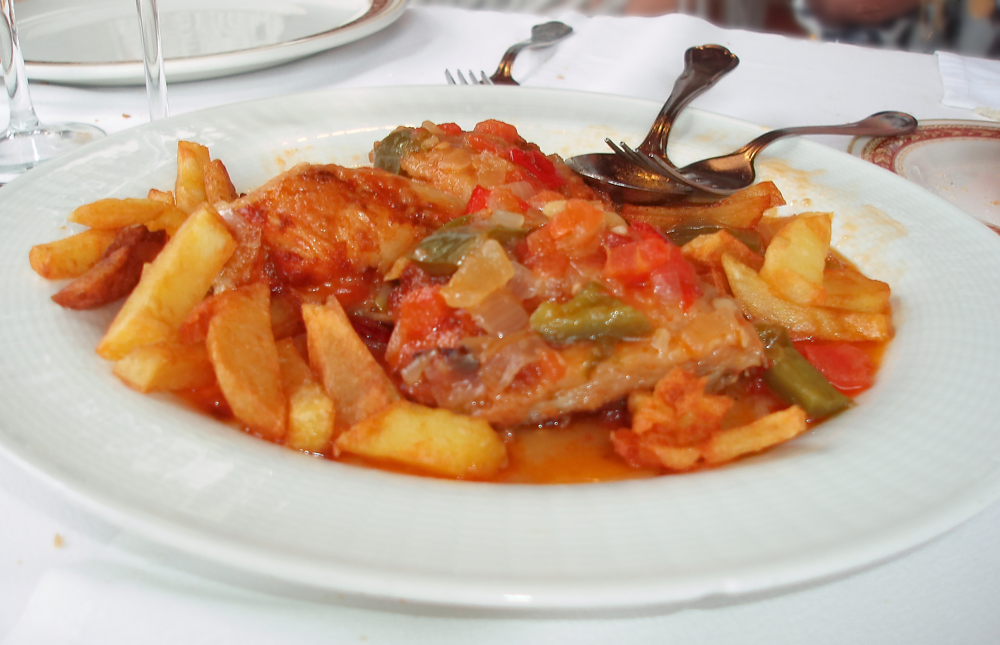
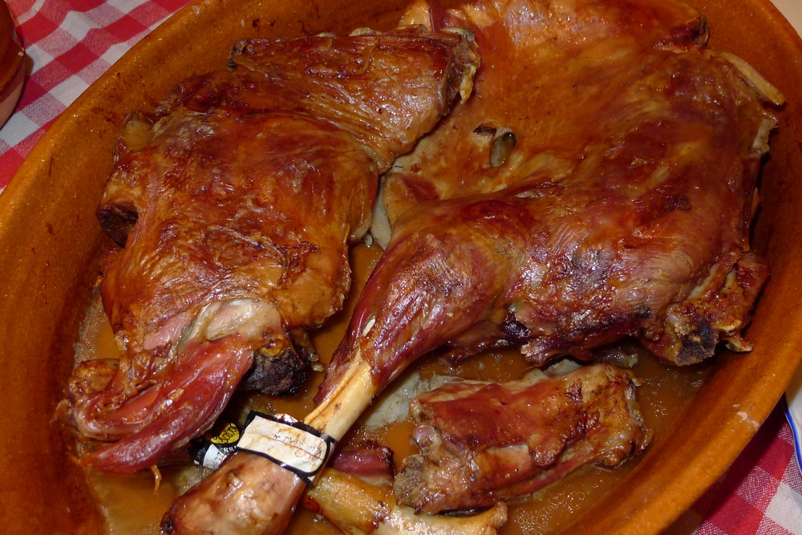
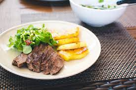
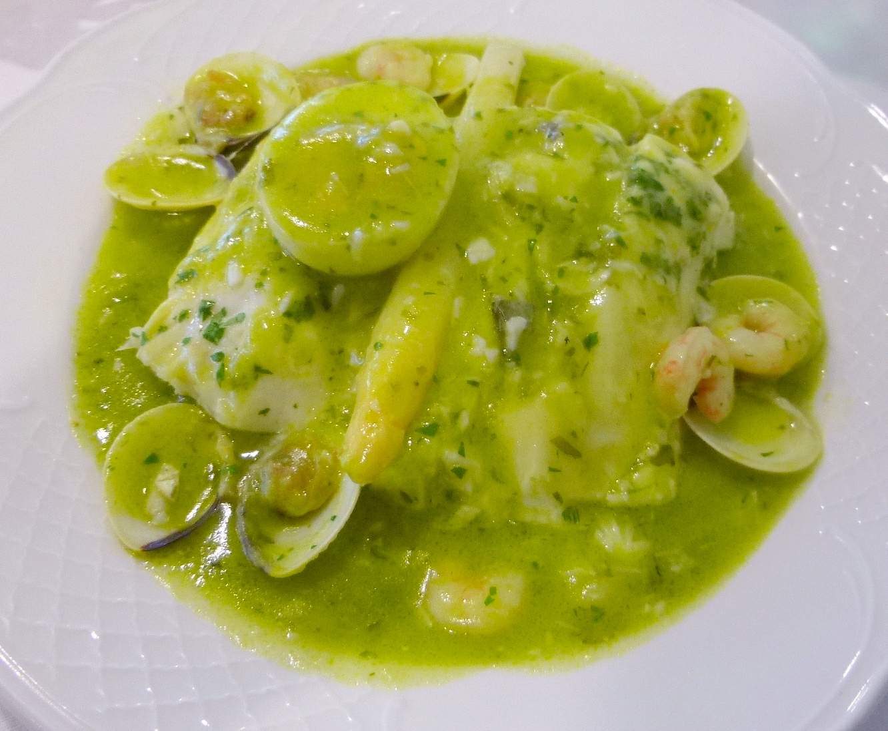
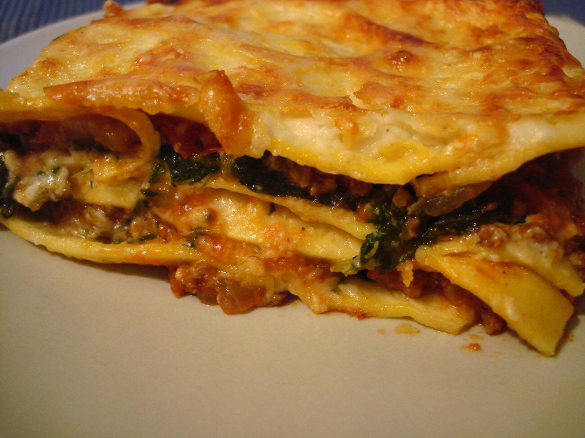
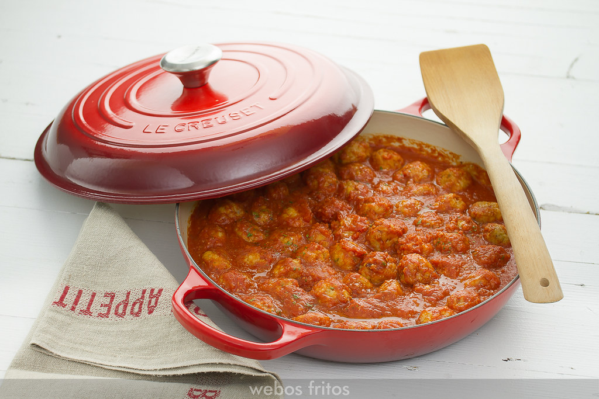
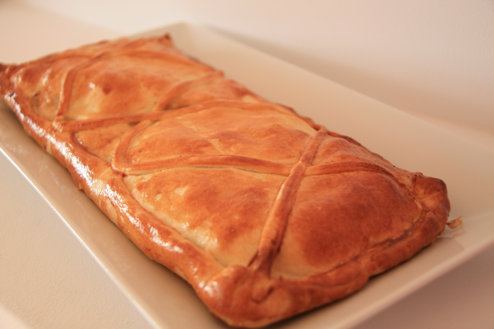
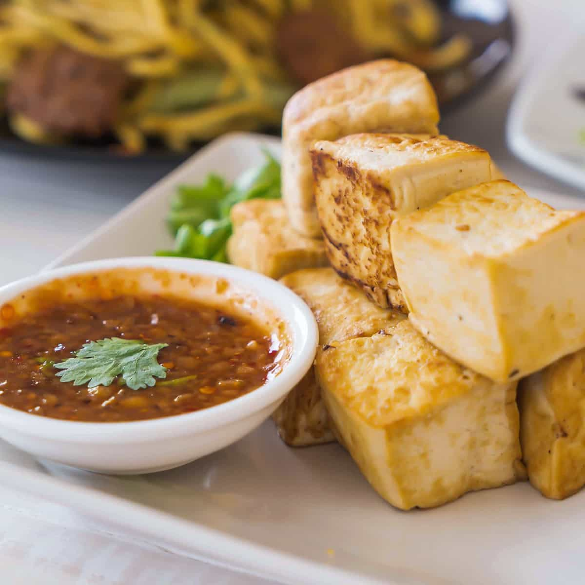

SEGUNDO PLATO
CARNES
- Pollo al chilindrón

- Cordero asado

- Filete de cerdo con patatas

PESCADOS
- Merluza en salsa verde

- Lasagna de atún

VEGETAL
- Albóndigas vegetales en salsa

- Empanada vegetal

- Tofu frito con salsa

Vuelta al Menú principal